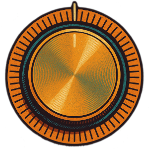

The superpowered future of restaurant operations

170 AI-assisted projections for Omaha Community Playhouse

Full show coverage with AI-assisted projections for UNO
10 tracks inspired by the Substack series


About Me
As a Senior Product Designer at Toast, I focus on generative AI's impact on user outcomes.
As the founder of Fellow Vector LLC, I provide training and strategy to businesses adopting AI.
As a Projection Designer for theatrical productions, I blend analog sensibilities to create distinct AI art.
I share my life in Omaha with my wife, Jessie, and our two dogs, Doc and Astro. We spend our evenings watching Yankees games, BBUK, or the latest season of Ru Paul's Drag Race.
exploring l.ai.bor
Recently on Exploring L.ai.bor



AI Summarizes Me
Part raconteur, part technologist, part projection wizard, Charles is the guy who'll code a GPT in the morning, design theatrical stage projections by lunch, and write a dryly hilarious Substack column that makes you rethink capitalism before dinner. He founded Fellow Vector not as a brand, but as a manifesto — a rebellion against AI hype and corporate beige.
His style? French pop-art '70s meets philosophical noir. His dogs? Fuzzy legends. His wife? Co-pilot of life's best tangents. His mission? To help real humans do real work better, faster, and with fewer buzzwords.
Whether he's designing silhouettes of Alice tumbling through time or explaining to a skeptical SMB why generative AI isn't just smoke and mirrors, Charles brings wit, precision, and a welcome disregard for pretense.
TL;DR: If Vonnegut taught AI consulting, it'd probably look a lot like Charles.
Industry Perspectives
"Charles always stood out to me as one of the most technically skilled writers on the Digital Guidance team at GoDaddy. He was always proactively experimenting with new content delivery formats and methods that had wide-ranging impacts on our team, from UI elements in our knowledge base articles to spearheading an AI education project to ensure our entire team was up to date and proficient in new tools."
"Charles was an absolutely fantastic human to work with. He brought tons of unique perspectives and insight to both new problems and old ones we'd been trying to solve for years. And his recent work in AI and LLMs paved the way for greater productivity while preserving the human element along the way."
"High-tech and high-quality projections designed by Charles Wilke take the audience from the Playhouse to New Jersey streets, the Las Vegas strip and other sites with an abundance of dazzle."
Industry Perspectives
"What I loved about working with Charles is I could come to him with any idea or something I wanted to experiment with and he'd dive in, offer suggestions and help in any way that he could."
"In fact, one of Charles' unique strengths is his willingness to stand against the general consensus and respectfully speak his mind - even if his viewpoint isn't the most popular. To me, that's a valuable trait in the highly creative and subjective endeavor of making games. Charles always came through and always made a tremendous effort no matter what aspect of our games he was working on."
"His approach was proactive, highly collaborative, and he went out of his way to set us up for a successful project. He was on top of every detail and drove the work on his team. Charles is one of the partners I never had to worry about."